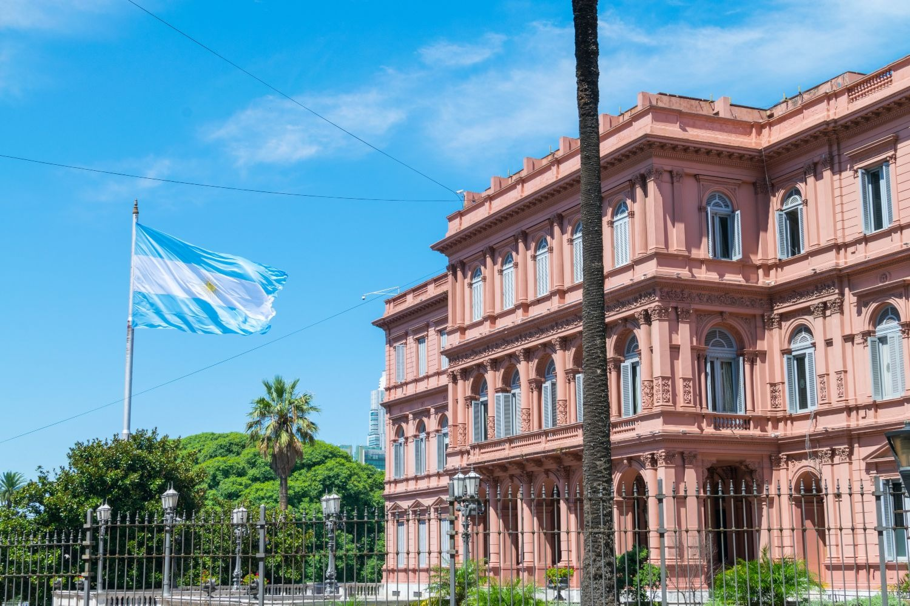

Arquitectura Ecléctica en Buenos Aires
La arquitectura de Buenos Aires es un reflejo palpable de su historia multicultural y de las distintas corrientes estéticas que han influido en su evolución urbana. La ciudad es conocida por su estilo ecléctico, donde conviven edificaciones de corte colonial con imponentes palacios europeos, modernos rascacielos y construcciones de estilo art déco. Este contraste arquitectónico convierte a Buenos Aires en un museo a cielo abierto, donde cada barrio cuenta una historia distinta a través de sus fachadas, balcones y monumentos.
Uno de los barrios más representativos de esta diversidad arquitectónica es Recoleta. Aquí, los edificios de estilo francés, con sus mansardas y ornamentaciones, evocan el esplendor parisino del siglo XIX. La Avenida Alvear es un claro ejemplo, con palacetes de inspiración francesa que albergan embajadas, hoteles de lujo y residencias aristocráticas. Sin embargo, a pocos minutos de allí, el barrio de San Telmo ofrece un escenario completamente distinto, con sus casas coloniales de patios internos, galerías de hierro forjado y calles empedradas que mantienen el espíritu del Buenos Aires antiguo.
En contraste, Puerto Madero muestra el lado más moderno de la ciudad. Este barrio, que alguna vez fue una zona portuaria abandonada, ha sido transformado en un centro urbano de rascacielos y torres de cristal. El Puente de la Mujer, diseñado por el arquitecto español Santiago Calatrava, se ha convertido en un ícono contemporáneo que simboliza la conexión entre tradición e innovación en el paisaje urbano porteño. Esta renovación urbana ha impulsado el crecimiento de complejos residenciales y hoteles de lujo, atrayendo tanto a turistas como a inversores.
Otro aspecto fascinante de la arquitectura en Buenos Aires es la manera en que los edificios cuentan historias de resistencia y memoria. El Edificio del Palacio Barolo, por ejemplo, es una obra maestra de estilo art déco inspirada en la Divina Comedia de Dante Alighieri. Con sus detalles simbólicos y su estructura monumental, representa el intento de un empresario italiano de crear un refugio para preservar la esencia cultural europea en América Latina. De esta forma, la arquitectura porteña no solo destaca por su belleza, sino por su capacidad para narrar el pasado y el presente de la ciudad a través de sus estructuras.
